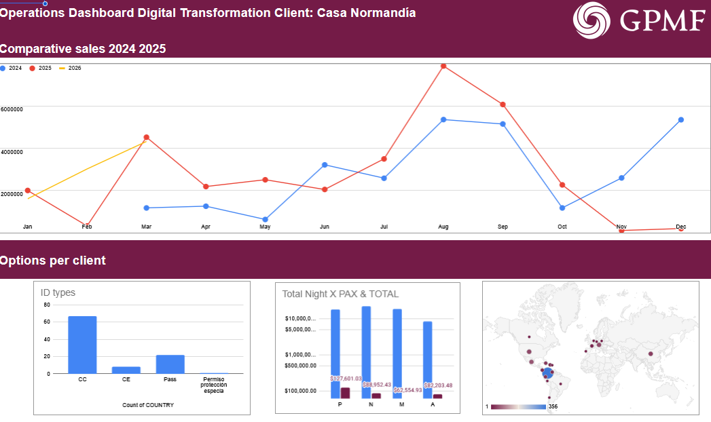
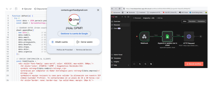
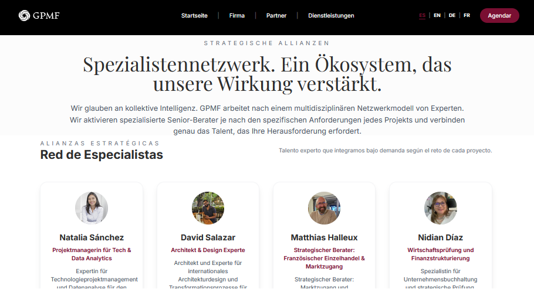

Multidisciplinary DNA. Borderless.
GPMF emerges from real field experience, uniting two forces. We fuse decades of experience in Colombia, Germany, Canada and France, combining engineering rigor with global business agility. We were born to translate complexity into results.
Senior Leadership
Every project is designed and validated by the partners. We guarantee senior vision, executed with agility.
Adriana
Engineering & Complexity
Engineer with extensive track record in R&D, public policy and complex systems (INRAE, Colciencias). Her superpower is providing systemic structure and technical credibility to high-level projects.
- • M.Sc. Agricultural Engineering (Univ. Nacional)
- • Experience in Scientific Diplomacy
- • Base: Europe / Latam

Marcela Sánchez Vargas
Strategy & Expansion
Expert in Business Development and M&A Sourcing with trilingual vision (ES/EN/DE). She specializes in opening difficult markets and high-ticket B2B/B2G negotiations.
- • European Master in Intercultural Education (Berlin)
- • 10+ Years in Strategic Alliances
- • Tech & Business Ecosystem Connector
Proven Execution Capability
Technical evidence of our capacity to design and operate complex systems for international ecosystems.
Pillar 1
Strategic Governance and Legal Shield
Success Case Reference
European Fund Management (Zero Findings Model)
Intervention Context
Design and execution of administrative, legal and financial infrastructure for the CEMarin international scientific consortium, funded by the German government (DAAD/BMBF).
Results Achieved
Institutional process engineering and structuring of auditable workflows for international fund management (exceeding €550,000), surpassing international audits with no fiscal findings.
Expected Institutional Impact
Capacity to install this same Compliance architecture in your organization, guaranteeing total transparency, financial traceability and immediate eligibility for international funds, donors and control entities.



Pillar 2
Technology-Enabled Operations
Success Case Reference
Business Intelligence and Process Automation
Intervention Context
Digital transformation of operations dependent on manual processes (Excel) towards centralized high-performance systems for consulting projects and asset management.
Results Achieved
In-House development of real-time control dashboards and implementation of automated workflows (RevOps) to manage databases, metrics and communications without human intervention.
Expected Institutional Impact
Building your institution's "operational engine". Automation of execution reports, metrics and repetitive processes so that Senior Management can make real-time decisions, recovering up to 40% of your strategic team's time.
Pillar 3
Institutional Branding (The Global Showcase)
Success Case Reference
World-Class Projection for Scientific Ecosystems
Intervention Context
Positioning of research networks and corporate consultancies before donors, embassies and top-level stakeholders in Europe and North America.
Results Achieved
Comprehensive End-to-End institutional identity management. This includes architecture and development of web ecosystems, as well as multimedia management and strategic narrative (Audiovisual production and executive reports).
Expected Institutional Impact
Transformation of your ecosystem's digital "showcase". Redesign of your online presence and project narrative to convey the prestige, transparency and institutional solidity required by global decision-makers.


What is CEMarin?
Click to watch on YouTube
Ready to implement these solutions in your organization?
Schedule a 30-minute strategic diagnostic session at no cost.